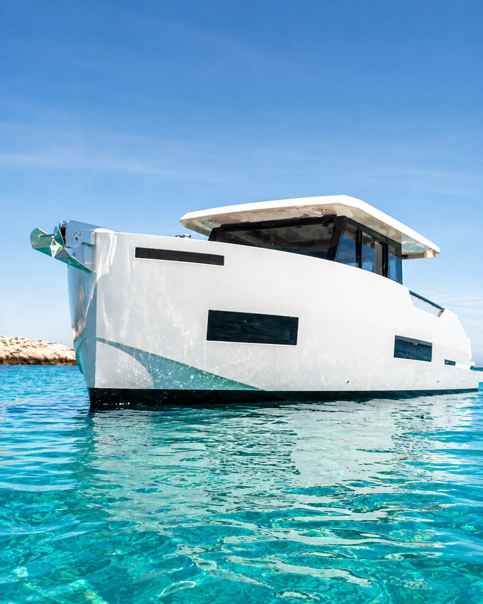

De Antonio D50
Un solo yacht premium, curato nei dettagli. 15 metri di design spagnolo per vivere il Mediterraneo partendo da Puerto Banús.
Lo yacht più esclusivo della Costa del Sol
Ampio prendisole, interni climatizzati, attrezzatura da paddle surf e snorkeling a bordo e catering leggero incluso.
Skipper abilitato, carburante e assicurazione inclusi in tutte le uscite. Partenze giornaliere da Puerto Banús, il porto più iconico della Costa del Sol.



Tutto incluso a bordo
Multilingue (ES · EN · FR · RU). Non serve la patente nautica.
Attrezzatura inclusa senza costi. Moto d'acqua opzionale con supplemento.
Impianto audio con Bluetooth: collega la tua musica dal telefono.
Catering leggero, acqua e bibite e una bottiglia di champagne in omaggio, inclusi a bordo in tutte le uscite.
Inclusi in tutte le uscite. Nessuna sorpresa, nessuna clausola in piccolo.
Ancoraggio in acque cristalline e dotazioni di sicurezza complete.
Ampio prendisole e spazio interno confortevole per 10 persone.
Che cosa significa noleggiare uno yacht privato a Puerto Banús
Quando diciamo yacht privato a Puerto Banús non intendiamo un posto su un'uscita collettiva: intendiamo che la barca intera, lo skipper e l'orario sono solo per il tuo gruppo. Si salpa dal porto più celebre della Costa del Sol, decidete voi in quale cala ancorare e quanto restarci, e non si divide la coperta con sconosciuti. È questa la differenza reale fra un charter privato e le escursioni vendute a posto singolo.
La barca che sostiene quella promessa
Promettere privacy è facile; quello che la rende credibile è la barca concreta che ti aspetta all'ormeggio. Il De Antonio D50 misura 15 metri, porta 10 ospiti più lo skipper e monta 2× Mercury V12 da 600 CV — 1.200 CV totali — che si sentono quando ci si sposta fra le cale della Costa del Sol senza che la navigazione si mangi mezza giornata. L'unità è del 2026, con interni climatizzati, ampio prendisole e piattaforma da bagno.
Rispetto a una barca a noleggio qualsiasi, la differenza sta in ciò che non bisogna trattare a parte. Lo skipper abilitato, il carburante della rotta abituale e l'IVA sono compresi nella tariffa — 1.200 € per 2 ore, 1.800 € per 4 ore e 3.000 € per la giornata intera di 8 ore — così come l'attrezzatura di paddle surf e snorkeling, l'impianto audio con Bluetooth per collegare la tua musica, il catering leggero con acqua e bibite, la bottiglia di champagne in omaggio e l'assicurazione. E non serve la patente nautica: lo skipper naviga con voi in ogni uscita.
Perché una sola barca premium e non una flotta
Potremmo annunciare una flotta di più unità. Preferiamo un solo yacht, curato nei dettagli, per una ragione pratica: in una flotta la barca su cui finisci per imbarcarti dipende dalla disponibilità del giorno, e manutenzione, pulizia e skipper si distribuiscono su molte unità. Qui sappiamo esattamente quale barca troverai al pontile, in che stato è e chi la condurrà. Prenoti questa barca e ti imbarchi su questa barca: niente cambi last minute né «unità similari».
Usciamo da Puerto Banús tutto l'anno, con skipper multilingue (ES · EN · FR · RU) e partenze giornaliere. Porto base: Puerto Banús. Partenza da un altro porto della Costa del Sol disponibile su richiesta. Se cerchi un'uscita privata a Marbella e vuoi sapere in anticipo esattamente che cosa troverai a bordo, questa scheda è la risposta completa.
Pronti a salpare?
Vedi disponibilità e prezziAssistenza in italiano su WhatsApp ed e-mail · Confermiamo in meno di 2 ore